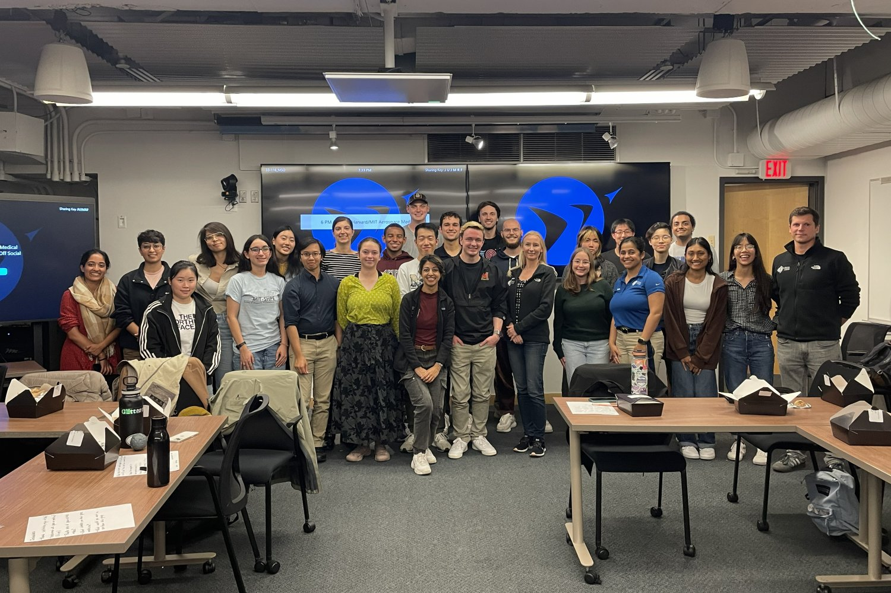
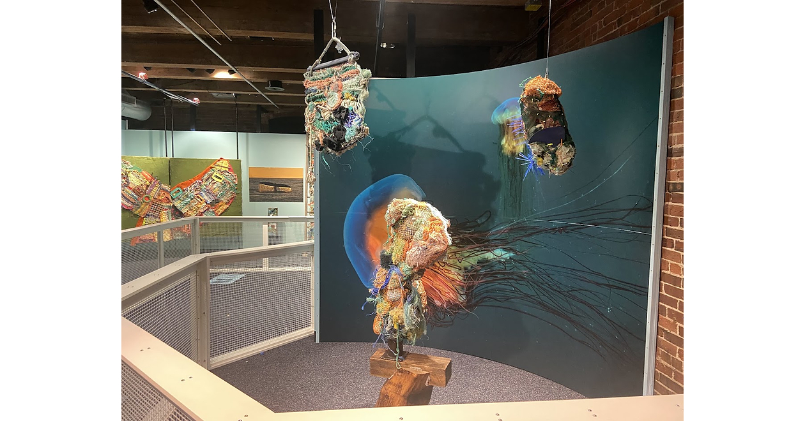
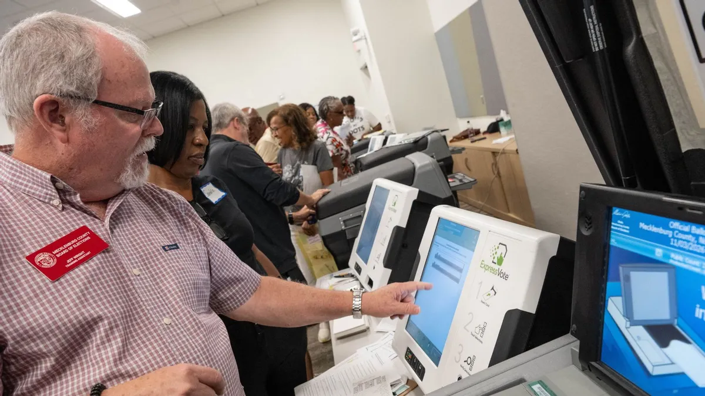

Independent AI-assisted summaries of linked reports. Headlines, dates and source URLs are supplied by NewsAPI; summaries are not independent verification of full articles. Please read original reports for details.
01
暂无更新 / No New Updates · 最后检查 / Checked: 2026-10-23
METCO的解雇记事本筹款活动
Dismissal Notepad Fundraiser for METCO
METCO的解雇记事本筹款活动回归，为西顿K-5社区提供个性化记事本。
The Dismissal Notepad Fundraiser is back, offering personalized notepads for the Weston K-5 community.
Weston Life · 2026-10-24
原始报道 / Original source ↗02
暂无更新 / No New Updates · 最后检查 / Checked: 2026-10-23
2026年10月27日照片重拍日
Picture Retake Day 10/27/2026
2026年10月27日将举行照片重拍日。
Picture Retake Day is scheduled for October 27, 2026.
Weston Life · 2026-10-24
原始报道 / Original source ↗03
暂无更新 / No New Updates · 最后检查 / Checked: 2026-10-23
西顿镇政府暂无更新
No New Town Update
目前没有新的西顿镇政府报告可用。
No newly found pictured Weston town-government report is available right now.
Weston Life · 2026-10-24
原始报道 / Original source ↗04
暂无更新 / No New Updates · 最后检查 / Checked: 2026-10-23

新社区助力太空医学学生
For students with their sights set on space medicine, a new community takes flight
MIT的无重力医生俱乐部汇聚了对太空医学感兴趣的波士顿地区学生。
MIT's Doctors Without Gravity club brings together students in the Boston area who are interested in space medicine.
Mit.edu · 2026-10-21
原始报道 / Original source ↗05
暂无更新 / No New Updates · 最后检查 / Checked: 2026-10-23

波士顿儿童博物馆的同理心展览
Oceans of Empathy Exhibit at Boston Children's Museum
波士顿儿童博物馆最近开设了同理心展览，展示了两位新英格兰艺术家的作品。
Boston Children's Museum recently opened Oceans of Empathy highlighting works from two New England-based artists.
PRNewswire · 2026-10-21
原始报道 / Original source ↗
国际油价 / Global Oil Prices
布伦特原油与WTI美国原油最新市场行情。
Brent and WTI crude oil market quotations.
Brent 最新行情 ↗
WTI 最新行情 ↗
价格及更新时间以行情提供方为准。
06
暂无更新 / No New Updates · 最后检查 / Checked: 2026-10-23
伊朗威胁扩大对经济和民用目标的打击
Iran Threatens Wider Strikes on Economic and Civilian Targets if U.S. Attacks
德黑兰威胁如果美国发动攻击，将扩大对经济和民用目标的打击。
Tehran threatens to expand strikes on economic and civilian targets if the U.S. attacks.
Weston Life · 2026-10-24
原始报道 / Original source ↗07
暂无更新 / No New Updates · 最后检查 / Checked: 2026-10-23
对向乌克兰提供军事援助的支持下降
Support for sending military aid to Ukraine has fallen
66%的注册选民表示他们在俄乌冲突中更同情乌克兰，3%表示同情俄罗斯，24%表示两者都不支持。
66% of registered voters say they sympathize more with Ukraine in the conflict between Russia and Ukraine, 3% say Russia, and 24% say neither.
Weston Life · 2026-10-24
原始报道 / Original source ↗08
暂无更新 / No New Updates · 最后检查 / Checked: 2026-10-23
强烈地震袭击中国，数百房屋倒塌
Hundreds of houses collapse as powerful earthquake hits China (VIDEOS)
强烈地震袭击中国西藏地区，导致数百栋房屋倒塌，造成至少16人死亡和数十人受伤。
A powerful earthquake struck China's Tibet region, causing hundreds of houses to collapse and resulting in at least 16 deaths and numerous injuries.
Weston Life · 2026-10-24
原始报道 / Original source ↗09
暂无更新 / No New Updates · 最后检查 / Checked: 2026-10-23
纳斯达克指数下跌超过750点，投资者担心巨额AI支出无法回报
Nasdaq dives more than 750 points as investors worry massive AI spending won't pay off
由于对人工智能巨额投资和高油价的担忧，股市在周四大幅下滑。
Stocks slid sharply on Thursday amid mounting concerns over whether massive investments in artificial intelligence and high oil prices would pay off.
Weston Life · 2026-10-24
原始报道 / Original source ↗10
暂无更新 / No New Updates · 最后检查 / Checked: 2026-10-23
NVIDIA与供应链合作伙伴扩大生产能力，加速AI基础设施建设
NVIDIA expands production capacity with supply chain partners to accelerate AI infrastructure building
NVIDIA与其供应链合作伙伴合作，扩大生产能力以加速人工智能基础设施的建设。
NVIDIA is collaborating with supply chain partners to expand production capacity and accelerate the construction of AI infrastructure.
Weston Life · 2026-10-24
原始报道 / Original source ↗11
暂无更新 / No New Updates · 最后检查 / Checked: 2026-10-23
Mave融资3400万美元以整合现有安全工具
Mave raises $34M to pull existing security tools into one agentic system
以色列安全运营初创公司Mave Security Ltd.宣布已融资3400万美元以加速其前沿人工智能研究。
Mave Security Ltd. has raised $34 million to accelerate its frontier artificial intelligence research.
Weston Life · 2026-10-24
原始报道 / Original source ↗12
暂无更新 / No New Updates · 最后检查 / Checked: 2026-10-23
OpenAI计划在下周锁定300亿美元融资
OpenAI Aims to Lock In $30 Billion Funding Round by Next Week
OpenAI接近完成一轮融资，预计将筹集高达300亿美元，估值为1.25万亿美元。
OpenAI is close to finalizing a funding round in which it could raise as much as $30 billion at a $1.25 trillion pre-money valuation.
Weston Life · 2026-10-24
原始报道 / Original source ↗13
暂无更新 / No New Updates · 最后检查 / Checked: 2026-10-23

投票机并非故意更改选票，可能发生的情况
Voting machines aren't deliberately switching votes. Here's what's likely happening
美国佛罗里达州、南卡罗来纳州、田纳西州、德克萨斯州及其他州的投票机在2026年中期选举中并非故意更改选民的候选人选择。
U.S. election machines in several states are not deliberately changing voters’ candidate choices.
Snopes.com · 2026-10-23
原始报道 / Original source ↗14
暂无更新 / No New Updates · 最后检查 / Checked: 2026-10-23
作者更正：DYNLL1结合MRE11以限制BRCA1缺陷细胞中的DNA末端重切
Author Correction: DYNLL1 binds to MRE11 to limit DNA end resection in BRCA1-deficient cells
作者更正：DYNLL1结合MRE11以限制BRCA1缺陷细胞中的DNA末端重切。
Author Correction: DYNLL1 binds to MRE11 to limit DNA end resection in BRCA1-deficient cells.
Weston Life · 2026-10-24
原始报道 / Original source ↗15
暂无更新 / No New Updates · 最后检查 / Checked: 2026-10-23
债券交易员对美联储加息押注退缩——这对抵押贷款利率意味着什么
Bond traders are backing off Fed rate hike bets — here's what it means for mortgage rates
尽管油价上涨，债券市场似乎未受到影响，可能影响抵押贷款利率。
The bond market appears unaffected by rising oil prices, which could have implications for mortgage rates.
Weston Life · 2026-10-24
原始报道 / Original source ↗